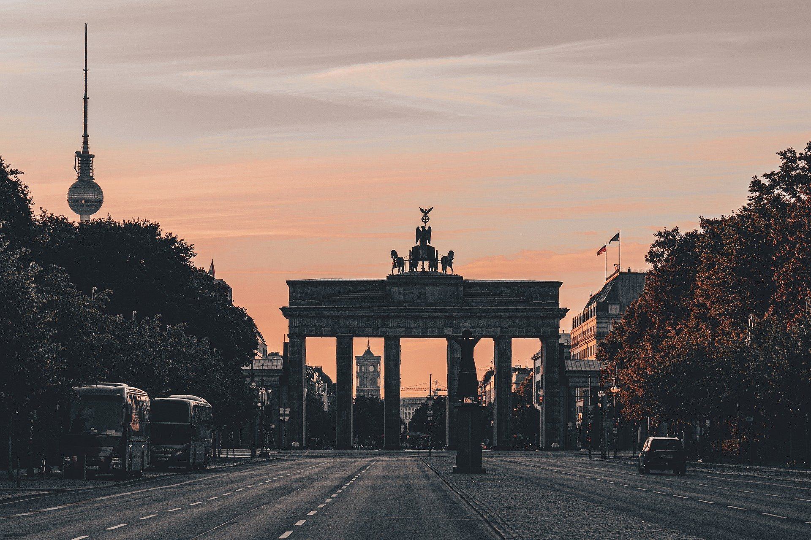
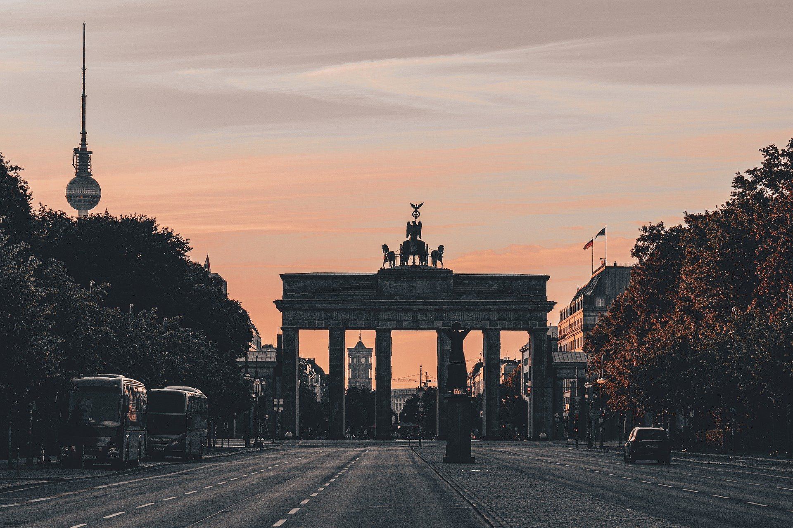

Berli is the capital and largest city of Germany by both area and population. Its 3.7 million inhabitants make it the European Union's most populous city, according to population within city limits. One of Germany's sixteen constituent states, Berlin is surrounded by the State of Brandenburg and contiguous with Potsdam, Brandenburg's capital. Berlin's urban area, which has a population of around 4.5 million, is the second most populous urban area in Germany after the Ruhr. The Berlin-Brandenburg capital region has over six million inhabitants and is Germany's third-largest metropolitan region after the Rhine-Ruhr and Rhine-Main regions.
GERMANY
Notable Cities
Berlin
Munich
Munich is the capital and most populous city of the German state of Bavaria. With a population of 1,558,395 inhabitants as of 31 July 2020, it is the third-largest city in Germany, after Berlin and Hamburg, and thus the largest which does not constitute its own state, as well as the 11th-largest city in the European Union. The city's metropolitan region is home to 6 million people. Straddling the banks of the River Isar (a tributary of the Danube) north of the Bavarian Alps, it is the seat of the Bavarian administrative region of Upper Bavaria, while being the most densely populated municipality in Germany (4,500 people per km2). Munich is the second-largest city in the Bavarian dialect area, after the Austrian capital of Vienna.
Hamburg
Hamburg, officially the Free and Hanseatic City of Hamburg (German: Freie und Hansestadt Hamburg; Low Saxon: Friee un Hansestadt Hamborg), is the second-largest city in Germany after Berlin, as well as the overall 7th largest city and largest non-capital city in the European Union with a population of over 1.84 million. Hamburg's urban area has a population of around 2.5 million and its metropolitan area is home to more than five million people. The city lies on the River Elbe and two of its tributaries, the River Alster and the River Bille. One of Germany's 16 federated states, Hamburg is surrounded by Schleswig-Holstein to the north and Lower Saxony to the south.
Notable Landmarks
Brandenburg Gate
The Brandenburg Gate is an 18th-century neoclassical monument in Berlin, built on the orders of Prussian king Frederick William II after the temporary restoration of order during the Batavian Revolution. One of the best-known landmarks of Germany, it was built on the site of a former city gate that marked the start of the road from Berlin to the town of Brandenburg an der Havel, which used to be the capital of the Margraviate of Brandenburg. It is located in the western part of the city centre of Berlin within Mitte, at the junction of Unter den Linden and Ebertstraße, immediately west of the Pariser Platz. One block to the north stands the Reichstag building, which houses the German parliament (Bundestag). The gate is the monumental entry to Unter den Linden, a boulevard of linden trees which led directly to the royal City Palace of the Prussian monarchs.
Neuschwanstein Castle
Neuschwanstein Castle is a 19th-century historicist palace on a rugged hill above the village of Hohenschwangau near Füssen in southwest Bavaria, Germany. The palace was commissioned by King Ludwig II of Bavaria as a retreat and in honour of Richard Wagner. Ludwig chose to pay for the palace out of his personal fortune and by means of extensive borrowing, rather than Bavarian public funds. Construction began in 1869, but was never fully completed. The castle was intended as a private residence for the King, until he died in 1886. It was open to the public shortly after his death. Since then more than 61 million people have visited Neuschwanstein Castle. More than 1.3 million people visit annually, with as many as 6,000 per day in the summer.
Cologne Cathedral
Cologne Cathedral (German: Kölner Dom, officially Hohe Domkirche Sankt Petrus, English: Cathedral Church of Saint Peter) is a Catholic cathedral in Cologne, North Rhine-Westphalia. It is the seat of the Archbishop of Cologne and of the administration of the Archdiocese of Cologne. It is a renowned monument of German Catholicism and Gothic architecture and was declared a World Heritage Site in 1996. It is Germany's most visited landmark, attracting an average of 20,000 people a day. At 157 m (515 ft), the cathedral is currently the tallest twin-spired church in the world, the second tallest church in Europe after Ulm Minster, and the third tallest church in the world. It is the largest Gothic church in Northern Europe and has the second-tallest spires. The towers for its two huge spires give the cathedral the largest façade of any church in the world. The choir has the largest height to width ratio, 3.6:1, of any medieval church.
Notable Citizens
Albert Einstein
Albert Einstein (14 March 1879 – 18 April 1955) was a German-born theoretical physicist, widely acknowledged to be one of the greatest physicists of all time. Einstein is best known for developing the theory of relativity, but he also made important contributions to the development of the theory of quantum mechanics. Relativity and quantum mechanics are together the two pillars of modern physics. His mass–energy equivalence formula E = mc2, which arises from relativity theory, has been dubbed "the world's most famous equation". His work is also known for its influence on the philosophy of science. He received the 1921 Nobel Prize in Physics "for his services to theoretical physics, and especially for his discovery of the law of the photoelectric effect", a pivotal step in the development of quantum theory.
Wolfgang Amadeus Mozart
Wolfgang Amadeus Mozart (27 January 1756 – 5 December 1791), baptised as Johannes Chrysostomus Wolfgangus Theophilus Mozart, was a prolific and influential composer of the Classical period. Despite his short life, his rapid pace of composition resulted in more than 800 works of virtually every genre of his time. Many of these compositions are acknowledged as pinnacles of the symphonic, concertante, chamber, operatic, and choral repertoire. Mozart is among the greatest composers in the history of Western music, and his elder colleague Joseph Haydn wrote: "posterity will not see such a talent again in 100 years".
Ludwig van Beethoven
Ludwig van Beethoven (baptised 17 December 1770 – 26 March 1827) was a German composer and pianist. Beethoven remains one of the most admired composers in the history of Western music; his works rank amongst the most performed of the classical music repertoire and span the transition from the Classical period to the Romantic era in classical music. His career has conventionally been divided into early, middle, and late periods. His early period, during which he forged his craft, is typically considered to have lasted until 1802. From 1802 to around 1812, his middle period showed an individual development from the styles of Joseph Haydn and Wolfgang Amadeus Mozart, and is sometimes characterized as heroic. During this time, he began to suffer increasingly from deafness
 
